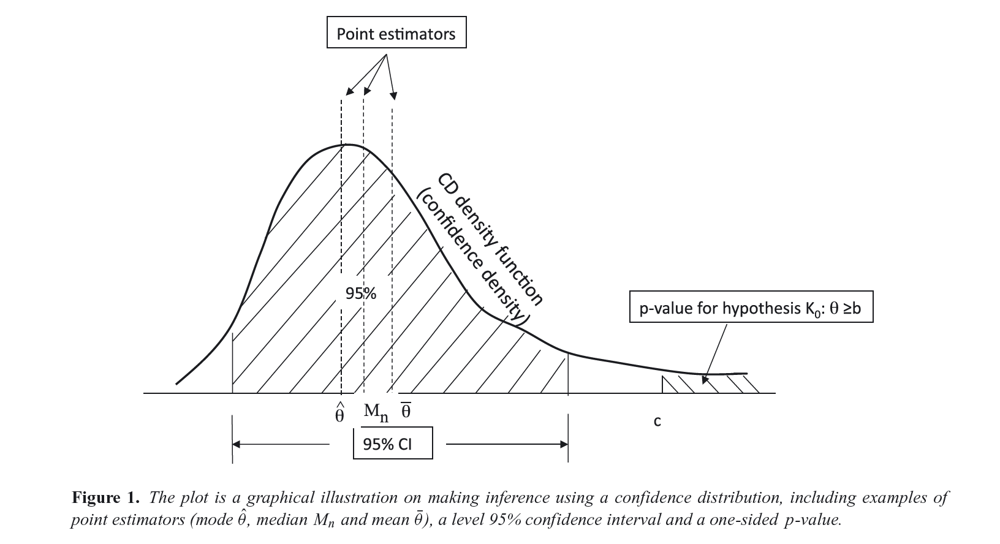

Introduction
Here I show how to produce P-value, S-value, likelihood, and deviance functions with the concurve package using fake data and data from real studies. Simply put, these functions are rich sources of information for scientific inference and the image below, taken from Xie & Singh, 2013[@1;] displays why.

For a more extensive discussion of these concepts, see the following references.1–16
Simple Models
First, I’d like to get started with very simple scenarios, where we could generate some normal data and combine two vectors in a dataframe,
library(concurve) #> Please see the documentation on https://data.lesslikely.com/concurve/ or by typing `help(concurve)` set.seed(1031) GroupA <- rnorm(500) GroupB <- rnorm(500) RandomData <- data.frame(GroupA, GroupB)
and then look at the differences between the two vectors. We’ll plug these vectors and the dataframe and now they’re inside of the curve_mean() function. Here, the default method involves calculating CIs using the Wald method.
intervalsdf <- curve_mean(GroupA, GroupB, data = RandomData, method = "default" )
Each of the functions within concurve will generally produce a list with three items, and the first will usually contain the function of interest. Here, we are looking at the first ten results of the first list of the previous item that we constructed.
head(intervalsdf[[1]], 10) #> lower.limit upper.limit intrvl.width intrvl.level cdf pvalue #> 1 -0.1125581 -0.1125581 0.000000e+00 0e+00 0.50000 1.0000 #> 2 -0.1125658 -0.1125504 1.543412e-05 1e-04 0.50005 0.9999 #> 3 -0.1125736 -0.1125427 3.086824e-05 2e-04 0.50010 0.9998 #> 4 -0.1125813 -0.1125350 4.630236e-05 3e-04 0.50015 0.9997 #> 5 -0.1125890 -0.1125273 6.173649e-05 4e-04 0.50020 0.9996 #> 6 -0.1125967 -0.1125195 7.717061e-05 5e-04 0.50025 0.9995 #> 7 -0.1126044 -0.1125118 9.260473e-05 6e-04 0.50030 0.9994 #> 8 -0.1126122 -0.1125041 1.080389e-04 7e-04 0.50035 0.9993 #> 9 -0.1126199 -0.1124964 1.234730e-04 8e-04 0.50040 0.9992 #> 10 -0.1126276 -0.1124887 1.389071e-04 9e-04 0.50045 0.9991 #> svalue #> 1 0.0000000000 #> 2 0.0001442767 #> 3 0.0002885679 #> 4 0.0004328734 #> 5 0.0005771935 #> 6 0.0007215279 #> 7 0.0008658768 #> 8 0.0010102402 #> 9 0.0011546179 #> 10 0.0012990102
That gives us a very comprehensive table, but it can be difficult to parse through, so luckily, we can view a graphical function using the ggcurve() function. The basic arguments that must be provided are the data argument and the “type” argument. To plot a consonance/confidence function, we would write “c”.
(function1 <- ggcurve(data = intervalsdf[[1]], type = "c", nullvalue = NULL))

We can see that the consonance “curve” is every interval estimate plotted, and provides the P-values, CIs, along with the median unbiased estimate It can be defined as such,
\[C V_{n}(\theta)=1-2\left|H_{n}(\theta)-0.5\right|=2 \min \left\{H_{n}(\theta), 1-H_{n}(\theta)\right\}\]
Its information transformation, the surprisal function, which closely maps to the deviance function, can be constructed by taking the \(-log_{2}\) of the observed P-value.3,17,18
To view the surprisal function, we simply change the type to “s” in ggcurve().
(function1 <- ggcurve(data = intervalsdf[[1]], type = "s"))

We can also view the consonance distribution by changing the type to “cdf”, which is a cumulative probability distribution, also more formally known as the “confidence distribution”. The point at which the curve reaches 0.5/50% is known as the “median unbiased estimate”. It is the same estimate that is typically at the peak of the confidencr curve from above, but this is not always the case.
(function1s <- ggcurve(data = intervalsdf[[2]], type = "cdf", nullvalue = NULL))

We can also get relevant statistics that show the range of values by using the curve_table() function. The tables can also be exported in several formats such as .docx, .ppt, images, and TeX files.
(x <- curve_table(data = intervalsdf[[1]], format = "image"))
Lower Limit |
Upper Limit |
Interval Width |
Interval Level (%) |
CDF |
P-value |
S-value (bits) |
-0.132 |
-0.093 |
0.039 |
25.0 |
0.625 |
0.750 |
0.415 |
-0.154 |
-0.071 |
0.083 |
50.0 |
0.750 |
0.500 |
1.000 |
-0.183 |
-0.042 |
0.142 |
75.0 |
0.875 |
0.250 |
2.000 |
-0.192 |
-0.034 |
0.158 |
80.0 |
0.900 |
0.200 |
2.322 |
-0.201 |
-0.024 |
0.177 |
85.0 |
0.925 |
0.150 |
2.737 |
-0.214 |
-0.011 |
0.203 |
90.0 |
0.950 |
0.100 |
3.322 |
-0.233 |
0.008 |
0.242 |
95.0 |
0.975 |
0.050 |
4.322 |
-0.251 |
0.026 |
0.276 |
97.5 |
0.988 |
0.025 |
5.322 |
-0.271 |
0.046 |
0.318 |
99.0 |
0.995 |
0.010 |
6.644 |
Comparing Functions
If we wanted to compare two studies or even two datasets to see the amount of “consonance/concordance”, we could use the curve_compare() function to get a very rough numerical output.
First, we generate some more fake data, that you would be unlikely to see in the real world, but that serves as a great tutorial.
GroupA2 <- rnorm(500) GroupB2 <- rnorm(500) RandomData2 <- data.frame(GroupA2, GroupB2) model <- lm(GroupA2 ~ GroupB2, data = RandomData2) randomframe <- curve_gen(model, "GroupB2")
Once again, we’ll plot this data with ggcurve(). We can also indicate whether we want certain interval estimates to be plotted in the function with the “levels” argument. If we wanted to plot the 50%, 75%, and 95% intervals, we’d provide the argument this way:
(function2 <- ggcurve(type = "c", randomframe[[1]], levels = c(0.50, 0.75, 0.95), nullvalue = NULL))

Now that we have two datasets, and two functions, we can compare them using the plot_compare() function.
(plot_compare( data1 = intervalsdf[[1]], data2 = randomframe[[1]], type = "c", measure = "default", nullvalue = TRUE ))

This function will provide us with the area that is shared between the curve, along with a ratio of overlap to non-overlap.
Another way to compare the functions is to use the cowplot & plot_grid() functions, which I am mostly beginning to lean towards to.
cowplot::plot_grid(function1, function2)

It’s clear that the outputs have changed and indicate far more overlap than before. A very useful and easy way to spot differences or lack of them.
Constructing Functions From Single Intervals
We can also take a set of confidence limits and use them to construct a consonance, surprisal, likelihood or deviance function using the curve_rev() function. This method is computed from the approximate normal distribution, but there are several caveats and scenarios in which it can break down, so I would recommend visiting the reference page and reading the documentation, curve_rev(). In general, those settings that conflict with such scenarios are not the default settings and I would feel uncomfortable to keep them that way.
For this next example, we’ll use two epidemiological studies19,20 that studied the impact of selective serotonin reuptake inhibitor exposure in pregnant mothers, and the association with the rate of autism in newborn childs.
The second of these studies suggested a null effect of SSRI exposure on autism rates in children, due to the lack of statistical significance, whereas the first one “found” an effect". The authors claimed that the two studies they conducted clear contradict one another. However, this was a complete misinterpretation of their own results.
Here I take the reported effect estimates from both studies, the confidence limits, and use them to reconstruct entire confidence curves to show how much the results truly differed.
curve1 <- curve_rev(point = 1.7, LL = 1.1, UL = 2.6, type = "c", measure = "ratio", steps = 10000) #> [1] 0.2194431 (ggcurve(data = curve1[[1]], type = "c", measure = "ratio", nullvalue = c(1)))

curve2 <- curve_rev(point = 1.61, LL = 0.997, UL = 2.59, type = "c", measure = "ratio", steps = 10000) #> [1] 0.2435408 (ggcurve(data = curve2[[1]], type = "c", measure = "ratio", nullvalue = c(1)))

The null value is shown via the red line and a large portion of bnoth of the confidence curves are away from it. We can also see this by plotting the likelihood functions via the curve_rev() function.
We can specify that we want a likelihood function using curve_rev() by specifying “l” for the type argument.
lik1 <- curve_rev(point = 1.7, LL = 1.1, UL = 2.6, type = "l", measure = "ratio", steps = 10000) #> [1] 0.2194431 (ggcurve(data = lik1[[1]], type = "l1", measure = "ratio", nullvalue = c(1)))

lik2 <- curve_rev(point = 1.61, LL = 0.997, UL = 2.59, type = "l", measure = "ratio", steps = 10000) #> [1] 0.2435408 (ggcurve(data = lik2[[1]], type = "l1", measure = "ratio", nullvalue = c(1)))

We can also view the amount of agreement between the likelihood functions of these two studies using the plot_compare function and producing areas shared between the curves.
(plot_compare( data1 = lik1[[1]], data2 = lik2[[1]], type = "l1", measure = "ratio", nullvalue = TRUE, title = "Brown et al. 2017. J Clin Psychiatry. vs. \nBrown et al. 2017. JAMA.", subtitle = "J Clin Psychiatry: OR = 1.7, 1/6.83 LI: LL = 1.1, UL = 2.6 \nJAMA: HR = 1.61, 1/6.83 LI: LL = 0.997, UL = 2.59", xaxis = expression(Theta ~ "= Hazard Ratio / Odds Ratio") ))

We can also do the same with the confidence curves.
(plot_compare( data1 = curve1[[1]], data2 = curve2[[1]], type = "c", measure = "ratio", nullvalue = TRUE, title = "Brown et al. 2017. J Clin Psychiatry. vs. \nBrown et al. 2017. JAMA.", subtitle = "J Clin Psychiatry: OR = 1.7, 1/6.83 LI: LL = 1.1, UL = 2.6 \nJAMA: HR = 1.61, 1/6.83 LI: LL = 0.997, UL = 2.59", xaxis = expression(Theta ~ "= Hazard Ratio / Odds Ratio") ))

This vignette was meant to be a very simple introduction to the concept of the confidence curve and how it relates to the likelihood function, and how both of these functions are much richer sources of information that single numerical estimates. For more detailed vignettes and explanations, please see some of the other articles listed on this site here.
Cite R Packages
Please remember to cite the R packages that you use in your work.
citation("concurve") #> #> Rafi Z, Vigotsky A (2020). _concurve: Computes and Plots Compatibility #> (Confidence) Intervals, P-Values, S-Values, & Likelihood Intervals to #> Form Consonance, Surprisal, & Likelihood Functions_. R package version #> 2.7.7, <URL: https://CRAN.R-project.org/package=concurve>. #> #> Rafi Z, Greenland S (2020). "Semantic and Cognitive Tools to Aid #> Statistical Science: Replace Confidence and Significance by #> Compatibility and Surprise." _BMC Medical Research Methodology_, *20*, #> 244. ISSN 1471-2288, doi: 10.1186/s12874-020-01105-9 (URL: #> https://doi.org/10.1186/s12874-020-01105-9), <URL: #> https://doi.org/10.1186/s12874-020-01105-9>. #> #> To see these entries in BibTeX format, use 'print(<citation>, #> bibtex=TRUE)', 'toBibtex(.)', or set #> 'options(citation.bibtex.max=999)'. citation("cowplot") #> #> To cite package 'cowplot' in publications use: #> #> Claus O. Wilke (2020). cowplot: Streamlined Plot Theme and Plot #> Annotations for 'ggplot2'. R package version 1.1.0. #> https://CRAN.R-project.org/package=cowplot #> #> A BibTeX entry for LaTeX users is #> #> @Manual{, #> title = {cowplot: Streamlined Plot Theme and Plot Annotations for 'ggplot2'}, #> author = {Claus O. Wilke}, #> year = {2020}, #> note = {R package version 1.1.0}, #> url = {https://CRAN.R-project.org/package=cowplot}, #> }
References
1. Xie M-g, Singh K. Confidence Distribution, the Frequentist Distribution Estimator of a Parameter: A Review. International Statistical Review. 2013;81(1):3-39. doi:10.1111/insr.12000
2. Birnbaum A. A unified theory of estimation, I. The Annals of Mathematical Statistics. 1961;32(1):112-135. doi:10.1214/aoms/1177705145
3. Rafi Z, Greenland S. Semantic and cognitive tools to aid statistical science: Replace confidence and significance by compatibility and surprise. BMC Medical Research Methodology. 2020;20(1):244. doi:10.1186/s12874-020-01105-9
4. Fraser DAS. The P-value function and statistical inference. The American Statistician. 2019;73(sup1):135-147. doi:10.1080/00031305.2018.1556735
5. Fraser DAS. P-Values: The Insight to Modern Statistical Inference. Annual Review of Statistics and Its Application. 2017;4(1):1-14. doi:10.1146/annurev-statistics-060116-054139
6. Poole C. Beyond the confidence interval. American Journal of Public Health. 1987;77(2):195-199. doi:10.2105/AJPH.77.2.195
7. Poole C. Confidence intervals exclude nothing. American Journal of Public Health. 1987;77(4):492-493. doi:10.2105/ajph.77.4.492
8. Schweder T, Hjort NL. Confidence and Likelihood*. Scandinavian Journal of Statistics. 2002;29(2):309-332. doi:10.1111/1467-9469.00285
9. Schweder T, Hjort NL. Confidence, Likelihood, Probability: Statistical Inference with Confidence Distributions. Cambridge University Press; 2016. https://books.google.com/books/about/Confidence_Likelihood_Probability.html?id=t7KzCwAAQBAJ.
10. Singh K, Xie M, Strawderman WE. Confidence distribution (CD) – distribution estimator of a parameter. arXiv. August 2007. https://arxiv.org/abs/0708.0976.
11. Sullivan KM, Foster DA. Use of the confidence interval function. Epidemiology. 1990;1(1):39-42. doi:10.1097/00001648-199001000-00009
12. Whitehead J. The case for frequentism in clinical trials. Statistics in Medicine. 1993;12(15-16):1405-1413. doi:10.1002/sim.4780121506
13. Rothman KJ, Greenland S, Lash TL. Precision and statistics in epidemiologic studies. In: Rothman KJ, Greenland S, Lash TL, eds. Modern Epidemiology. 3rd ed. Lippincott Williams & Wilkins; 2008:148-167. https://books.google.com/books/about/Modern_Epidemiology.html?id=Z3vjT9ALxHUC.
14. Rücker G, Schwarzer G. Beyond the forest plot: The drapery plot. Research Synthesis Methods. April 2020. doi:10.1002/jrsm.1410
15. Rothman KJ, Johnson ES, Sugano DS. Is flutamide effective in patients with bilateral orchiectomy? The Lancet. 1999;353(9159):1184. doi:10.1016/s0140-6736(05)74403-2
16. Cox DR. Discussion. International Statistical Review. 2013;81(1):40-41. doi:10/gg9s2f
17. Greenland S. Valid P-values behave exactly as they should: Some misleading criticisms of P-values and their resolution with S-values. The American Statistician. 2019;73(sup1):106-114. doi:10.1080/00031305.2018.1529625
18. Shannon CE. A mathematical theory of communication. The Bell System Technical Journal. 1948;27(3):379-423. doi:10.1002/j.1538-7305.1948.tb01338.x
19. Brown HK, Ray JG, Wilton AS, Lunsky Y, Gomes T, Vigod SN. Association between serotonergic antidepressant use during pregnancy and autism spectrum disorder in children. Journal of the American Medical Association. 2017;317(15):1544-1552. doi:10.1001/jama.2017.3415
20. Brown HK, Hussain-Shamsy N, Lunsky Y, Dennis C-LE, Vigod SN. The association between antenatal exposure to selective serotonin reuptake inhibitors and autism: A systematic review and meta-analysis. The Journal of Clinical Psychiatry. 2017;78(1):e48-e58. doi:10.4088/JCP.15r10194